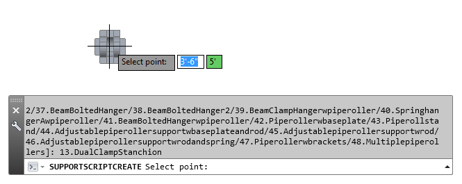

The sample illustrates how to use high-level APIs to create and modify pipe supports.
The high-level APIs are implemented by the managed class SupportHelper in Autodesk.Autodesk.ProcessPower.PnP3dPipeSupport. Supports can be created from script, the pipe support spec, or blocks. Helper classes are also available to change parametric dimensions and join objects to pipe supports.
NETLOAD Supports SupportScriptCreate 1.SimplePipeSupport 0,0,0 0

In the sample, the SupportScriptCreate gets a list of parametric supports, prompts to specify the type, and places the support.
SupportSpecCreate illustrates how to use the pipe support spec to create pipe supports:
// Create support from support spec
//
[CommandMethod("SupportSpecCreate")]
public static void SupportSpecCreate()
{
try
{
Editor ed = AcadApp.DocumentManager.MdiActiveDocument.Editor;
Database db = AcadApp.DocumentManager.MdiActiveDocument.Database;
// Use current size
//
UISettings sett = new UISettings();
NominalDiameter nd = NominalDiameter.FromDisplayString(null, sett.CurrentSize);
// Select from support spec
//
List<PartSizeProperties> parts = new List<PartSizeProperties>();
SpecManager specMgr = SpecManager.GetSpecManager();
SpecPartReader reader = specMgr.SelectParts("PipeSupportsSpec", "Support", nd);
while (reader.Next())
{
SpecPart part = new SpecPart();
part.AssignFrom(reader.Current);
parts.Add(part);
}
// Ask for a part
//
List<String> kwds = new List<String>();
int cnt = 0;
foreach (PartSizeProperties part in parts)
{
// Make a keyword in the form "n.PartFamilyLongDescrtiption"
// And kill spaces and other special symbols
//
cnt += 1;
String s = "";
try
{
Object val = part.PropValue("PartFamilyLongDesc");
if (val != null)
{
s = val.ToString();
s = s.Replace(" ", "");
s = s.Replace("/", "");
s = s.Replace(".", "");
}
}
catch (System.Exception)
{
}
kwds.Add(cnt.ToString() + "." + s);
}
if (kwds.Count == 0)
{
ed.WriteMessage("\nNo parts of the current size found");
return;
}
// Ask
//
PromptResult res = ed.GetKeywords("\nSelect support", kwds.ToArray());
if (res.Status != PromptStatus.OK)
{
return;
}
// Find selected
//
int j = kwds.IndexOf(res.StringResult);
PartSizeProperties supportPart = parts[j];
// Create entity
//
using (Support support = SupportHelper.CreateSupportEntity(supportPart, db))
{
// Place
//
PlaceSupport(support, supportPart);
}
}
catch (System.Exception)
{
}
} See readme.txt in the project sample for details.